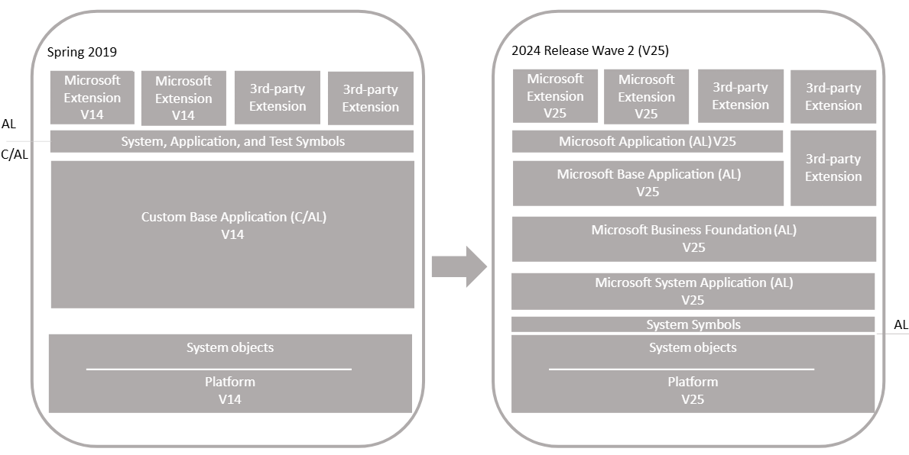
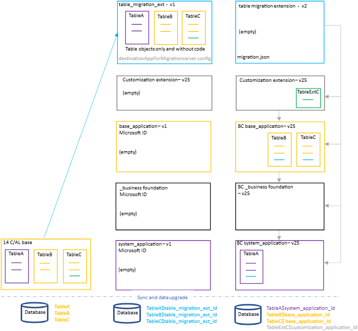
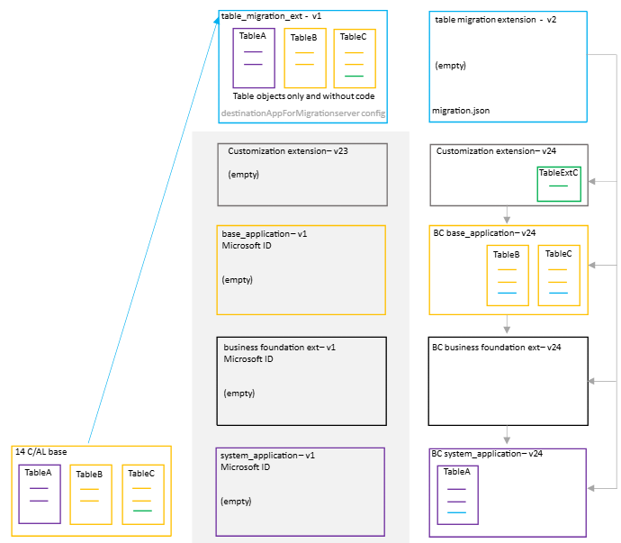
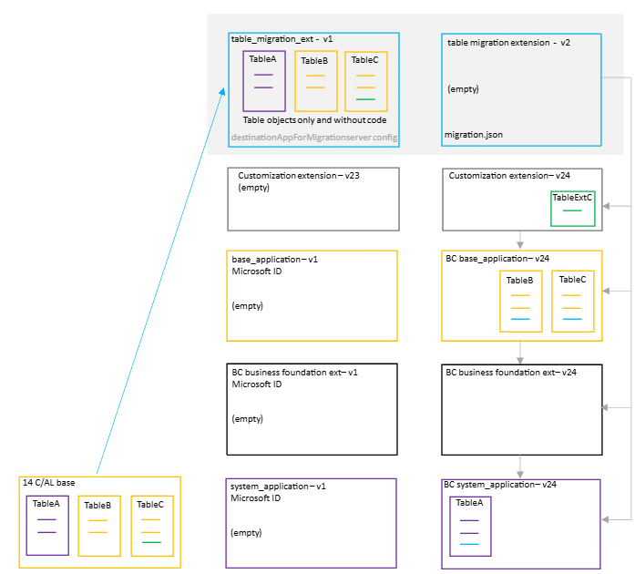

Upgrading Customized C/AL Application to Microsoft Base Application version 25
This article describes how to upgrade a customized version 14 application to a version 25 solution that uses the Microsoft system and base applications.

Overview
The upgrade is divided into two sections: Application Upgrade and Data Upgrade. The Application Upgrade section deals with upgrading the application code. For the application upgrade, you'll have to create several extensions. Some of these extensions are only used for upgrade purposes. The Data Upgrade section deals with upgrading the data on tenants - publishing, syncing, and installing extensions. For this scenario, the data upgrade consists of two phases for migrating data from the current tables to extension-based tables. The following figure illustrates the upgrade process.

The process uses two special features for migrating tables and data to extensions:
- destinationappsformigration server setting
The destinationappsformigration setting is a configuration setting on the Business Central Server. In short, it's used to transfer ownership of the existing tables to the table migration extension. For more information, see DestinationAppsForMigration.
- migration.json file
The migration.json file is used to migrate tables and fields from one extension to another. In this case, migration is from the table migration extension to system and base application tables. For more information about the migration.json, see The Migration.json File.
Single-tenant and multitenant deployments
The process for upgrading is similar for a single-tenant and multitenant deployment. However, there are some inherent differences. With a single-tenant deployment, the application code and business data are in the same database. In a multitenant deployment, application code is in a separate database (the application database) than the business data (tenant). In the procedures that follow, for a single-tenant deployment, consider references to the application database and tenant database as the same database. Steps are marked as Single-tenant only or Multitenant only where applicable.
Personalization and customizations
Since version 14, the way user profiles are defined, stored, and customized has undergone a major overhaul. This change means user personalization and profile customizations that were done in the Windows Client are lost after upgrade. The legacy profiles remain available but their associated profile configurations are discarded. Page customizations must be either recreated using the latest Business Central client or as an AL extension. For more information about personalization, customization, and Al profiles, see:
Prerequisites
- Your version 14 is compatible with version 25.
There are several updates for version 14. The updates have a compatible version 25 update. For more information, see Dynamics 365 Business Central Upgrade Compatibility Matrix.
- The version 14 Dynamics NAV Development Shell and Business Central Administration Shell are installed.
To run the Dynamics NAV Development Shell, you must have a developer/partner licence that allows you to run the File, Export, and Text system.
- Get the required version of the txt2al conversion tool.
During the upgrade, you'll use the txt2al conversion tool to convert existing tables to the AL syntax. You'll need to use a version of txt2al conversion tool that supports the --tableDataOnly parameter. This parameter was first introduced in version 14.12 (cumulative update 11, platform 14.0.41862). So if you're upgrading from version 14.11 (cumulative update 10) or earlier, you'll have to download the txt2al conversion tool from a later version 14 update. See Released Cumulative Updates for Microsoft Dynamics 365 Business Central Spring 2019 Update on-premises.
- Install the full-text search feature to the SQL server instance
The SQL server instance that hosts your Business Central database must include the Full-text and Semantic Extractions for Search feature. The version 25 Microsoft base application requires this feature; however, it isn't installed by default.
- To verify whether full-text search is installed:
- Using Transactional-SQL
- To verify whether full-text search is installed:
Execute the following query on the SQL database instance:
Transact-SQLCopy
SELECT FULLTEXTSERVICEPROPERTY('IsFullTextInstalled') AS IsFullTextInstalled;
If the query returns 0, then full-text search isn't installed; if 1, then it's installed.
- Using SQL Server Management Studio
In Object Explorer, right-click a server instance, select Properties, then select Advanced. If the Default Full-Text Language property is present, then full-text search is installed; otherwise, it isn't.
- Learn more at Viewing or Changing Server Properties for Full-Text Search
- To install full-text search, add it as a feature by using the SQL Server Installation Center.
You need to access the installation media or folder for your SQL Server version, and then run set.exe to start the SQL Server Installation Center. Follow the instructions at Add Features to an Instance of SQL Server. When you get to the Feature Selection page, choose Full-text and Semantic Extractions for Search.
Tip
If you're using SQL Server 2019 Express, you can download the installation media from Microsoft Download Center.
Task 1: Install version 25
- Download the latest available update for Dynamics 365 Business Central (version 25) that is compatible with your version 14.
For more information, see Dynamics 365 Business Central Upgrade Compatibility Matrix.
- Before you install version 25, it can be useful to create desktop shortcuts to the version 14.0 tools, such as the Business Central Administration Shell and Dynamics NAV Development Shell because the Start menu items for these tools will be replaced with the version 25 tools.
- Install Business Central version 25 components.
You'll have to keep version 14 installed to complete some steps in the upgrade process. When you install version 25, you must either specify different port numbers for components (like the Business Central Server instance and web services) or stop the version 14.0 Business Central Server instance before you run the installation. Otherwise, you'll get an error that the Business Central Server failed to install.
For more information, see Installing Business Central Using Setup.
Task 2: Upgrade permission sets
Version 18 introduced the capability to define permissions sets as AL objects, instead of as data. Permissions sets as AL objects is now the default and recommended model for defining permissions. However for now, you can choose to use the legacy model, where permissions are defined and stored as data in the database. Whichever model you choose, there are permission set-related tasks you'll have to go through before and during upgrade.
For more information, see Upgrading Permissions Sets and Permissions.
APPLICATION UPGRADE
This section describes how to upgrade the application code. This work involves creating various extensions.
Task 3: Move code customizations to extensions
The first step, and the largest step, is to create extensions for the customizations compared to the Microsoft system and base applications.
- Create extensions for the target platform 14.0 Business Central 2024 release wave 2.
- Include dependencies for the Microsoft System, Base, and Application extensions for version 25.0.0.0.
For example, if your application includes custom tables, then create extensions that include table objects and logic for the custom tables. If the application includes custom fields on system or base application tables, create extensions that include table extension objects to cover the custom fields. As part of this upgrade process, the data currently stored in custom tables or fields will be migrated from the existing tables to the new ones defined in the extensions.
Also, be aware that since version 18, several base application tables are now temporary tables. This change may affect the upgrade. For more information, see Known Issues - Tables changed to temporary may prevent synchronizing new base application version.
Task 4: Create empty system, business foundation, base, and customization extensions
For the interim phase of migrating tables and data to extensions, you create empty extension versions for:
- Microsoft system application
- Microsoft business foundation application. This extension was introduced in version 24 and currently contains objects and logic for number series, which was previously part of the base application. It will contain more functionality in future releases.
- Microsoft base application
- Each new customization extension that includes table or table extension objects for moving out of the existing base application. You don't have to create empty versions for extensions that don't include table changes. For example, the extension only includes a page object and code.

The only file in the extension project that's required is an app.json. You can create the empty extension like any other extension by adding an AL project in Visual Studio Code:
- In Visual Studio Code, select View > Command Palette > AL: Go! and follow instructions.
- Delete the HelloWorld.al sample file from the project.
- Modify the app.json file.
The important settings in the app.json file are: "id", "name", "version", "publisher", "dependencies", and "runtime".
- The id and name must match the value used by Microsoft's extensions.
- Set the version to any version lower than 25.0.0.0, like 14.0.0.0.
- You'll also have to include the "publisher". You can use your own publisher name or "Microsoft".
- Remove all other settings. It's important that there are no "dependencies" set.
- Set the runtime to "14.0".
The app.json files for each extension should look similar to following examples:
System Application
JSONCopy
"id": "63ca2fa4-4f03-4f2b-a480-172fef340d3f",
"name": "System Application",
"publisher": "Microsoft",
"version": "14.0.0.0",
"runtime": "14.0",
"target": "OnPrem"
Business Foundation
JSONCopy
"id": "f3552374-a1f2-4356-848e-196002525837",
"name": "Business Foundation",
"publisher": "Microsoft",
"version": "14.0.0.0",
"runtime": "14.0",
"target": "OnPrem"
Base Application
JSONCopy
"id": "437dbf0e-84ff-417a-965d-ed2bb9650972",
"name": "Base Application",
"publisher": "Microsoft",
"version": "14.0.0.0",
"runtime": "14.0",
"target": "OnPrem"
Customization extensions
JSONCopy
"id": "<extenion ID>",
"name": "<extension name>",
"publisher": "<extension publisher",
"version": "<extension version - must be lower than the final version>",
"runtime": "14.0",
"target": "OnPrem"
Note
For customization extensions, the version number must be lower than the final version for publication. Otherwise, you can't run upgrade on the extension later.
- Build and compile the extension package. To build the extension package, press Ctrl+Shift+B.
Tip
This step is only required if you need to trigger a data upgrade on these extensions, which you'll do by running Start-NavAppDataUpgrade on these extensions in Task 17. For the scenario in this article, at a minimum this step is required for the System and Base Applications. You can skip this step for any customization extensions that do not not include upgrade code.
Task 5: Create table migration extension
In this step, you create an extension that consists only of the non-system table objects from your custom base application. The table objects will only include the properties and field definitions. They won't include AL code on triggers or methods. This extension is an interim extension used only during the upgrade.
You'll create two versions of this extension. The first version contains the table objects. The second version, is an empty extension that contains a migrate.json file.

Create the first version - tables only
- Create a folder where you'll store exported txt files for tables (for example, C:\export2al\bc14tablesonly).
- Start the Dynamics NAV Development Shell for version 14.
- Run the Export-NAVApplicationObject cmdlet to export only tables from the database.
PowerShellCopy
Export-NAVApplicationObject -DatabaseServer .\BCDEMO -DatabaseName "Demo Database BC (14-0)" -ExportToNewSyntax -Path "C:\export2al\bc14tablesonly\exportedbc14-tables.txt" -Filter 'Type=Table;Id=1..1999999999'
- Use the txt2al conversion tool to convert the exported tables to the AL syntax. Use the --tableDataOnly parameter to include table and field definitions only.
- Create a folder for storing the AL files for base application objects (for example, C:\export2al\bc14tablesonly\al).
- Start a command prompt as an administrator, and navigate to the folder that contains txt2al.exe file.
By default, the location is C:\Program Files (x86)\Microsoft Dynamics 365 Business Central\140\RoleTailored Client.
- Run the txt2al command:
Copy
txt2al --source=C:\export2al\bc14tablesonly --target=C:\export2al\bc14tablesonly\al --tableDataOnly
For more information about this tool, see The Txt2Al Conversion Tool.
Note
If the --tableDataOnly parameter isn't available, you'll need a later version ot the txt2al conversion tool. See Prerequisites for more information.
- Make sure you have installed the latest AL Extension for Visual Studio Code from the version 25 DVD.
For more information, see Get Started with AL.
- In Visual Studio Code, create an AL project for table migration extension using the AL: Go! command.
Set the target platform to 14.0 Business Central 2024 release wave 2.
- If present, delete the HelloWorld.al file.
- Configure the project's app.json file:
- Set the "name", "publisher", and "version". You can use any valid values.
- Delete the "application" parameter.
- Clear the "dependencies".
- Set the "idRanges" to cover the table object IDs or clear all values.
- Add the "target" parameter and set it to "Onprem".
Make a note of the "id" setting value, which is the ID assigned to the table migration extension. You'll use this ID later in the process.
JSONCopy
{
"id": "aaaaaaaa-0000-1111-2222-bbbbbbbbbbbb",
"name": "bc14baseapptablesonly",
"publisher": "Default Publisher",
"version": "1.0.0.0",
"brief": "",
"description": "",
"privacyStatement": "",
"EULA": "",
"help": "",
"url": "",
"logo": "",
"dependencies": [],
"screenshots": [],
"platform": "1.0.0.0",
"idRanges": [],
"resourceExposurePolicy": {
"allowDebugging": true,
"allowDownloadingSource": true,
"includeSourceInSymbolFile": true
},
"runtime": "14.0",
"features": [
"NoImplicitWith"
],
"target": "OnPrem"
}
- Create an .alpackages folder in the root folder of the project and then copy the version 25 system symbols extension (System.app file) to the folder.
The System.app file is located where you installed the AL Development Environment. By default, the folder path is C:\Program Files (x86)\Microsoft Dynamics 365 Business Central\250\AL Development Environment. This package contains the symbols for all the system tables and codeunits.
- Add the AL files for the tables that you converted earlier to the root folder for the project.
- Build the extension package for the first version.
To build the extension package, press Ctrl+Shift+B. This step creates an .app file for your extension. The file name has the format <publisher>_<name>_<version>.app.
Create the second version - empty
- In Visual Studio Code, create a new file called migration.json file and add it to the project's root folder.
- In the migration.json, include rules for system application, business foundation extension, base application, and your customization extensions.
JSONCopy
{
"apprules": [
{
"id": "63ca2fa4-4f03-4f2b-a480-172fef340d3f"
},
{
"id": "f3552374-a1f2-4356-848e-196002525837"
},
{
"id": "437dbf0e-84ff-417a-965d-ed2bb9650972"
},
{
"id": "<NNNNNNNN-NNNN-NNNN-NNNN-NNNNNNNNNNNN>"
}
]
}
In the example code:
- 63ca2fa4-4f03-4f2b-a480-172fef340d3f identifies the system application extension
- f3552374-a1f2-4356-848e-196002525837 identifies the business foundation extension
- 437dbf0e-84ff-417a-965d-ed2bb9650972 identifies the base application extension
- The last entry is an example that identifies new customization extension. Include an entry for each customization extension for which you created an empty version in Task 4. Replace <NNNNNNNN-NNNN-NNNN-NNNN-NNNNNNNNNNNN> with the actual extension ID. Remove this entry if not used.
For more information about the migration.json, see The Migration.json File.
- Delete the AL table object files except for the following tables:
Table | File | Modifications |
|---|---|---|
table 7330 "Bin Content Buffer" | BinContentBuffer.Table.al | Remove line AccessByPermission = TableData "Warehouse Source Filter" = R; |
table 265 "Document Entry" | DocumentEntry.Table.al | Remove any TableRelation = lines. |
table 338 "Entry Summary" | EntrySummary.Table.al | Remove line AccessByPermission = TableData "Warehouse Source Filter" = R; |
table 1670 "Option Lookup Buffer" | OptionLookupBuffer.Table.al | Remove any TableRelation = lines. |
- Starting in version 18, these tables have been changed to temporary tables. For now, you'll have to include these objects in the table migration extension; otherwise you'll have problems syncing the extension later.
- Increase the version in the app.json file.
- Build the extension package for the second version.
To build the extension package, press Ctrl+Shift+B.
DATA UPGRADE
Task 6: Prepare databases
- Make backup of the databases.
- Disable data encryption.
If the current server instance uses data encryption, disable it. You can enable it again after upgrading.
For more information, see Managing Encryption and Encryption Keys.
Instead of disabling encryption, you can export the current encryption key, which you'll then import after upgrade. However, we recommend disabling encryption before upgrading.
- Start Business Central Administration Shell for version 14 as an administrator.
For more information, see Run Business Central Administration Shell.
- (Single-tenant only) Uninstall all extensions from the tenants.
To uninstall an extension, you use the Uninstall-NAVApp cmdlet. For example, you can uninstall all extensions with a single command:
PowerShellCopy
Get-NAVAppInfo -ServerInstance <server instance name> -Tenant <tenant ID>| % { Uninstall-NAVApp -ServerInstance <server instance name> -Tenant <tenant ID> -Name $_.Name -Version $_.Version -Force}
- (Single-tenant only) Unpublish all extensions from the application server instance.
To unpublish an extension, use the Unpublish-NAVApp cmdlet. For example, you can unpublish all extensions by using a single command:
PowerShellCopy
Get-NAVAppInfo -ServerInstance <BC14 server instance> | % { Unpublish-NAVApp -ServerInstance <BC14 server instance> -Name $_.Name -Version $_.Version }
- Unpublish all system, test, and application symbols.
To unpublish symbols, use the Unpublish-NAVAPP cmdlet with the -SymbolsOnly switch.
PowerShellCopy
Get-NAVAppInfo -ServerInstance <BC14 server instance> -SymbolsOnly | % { Unpublish-NAVApp -ServerInstance <BC14 server instance> -Name $_.Name -Version $_.Version }
- (Multitenant only) Dismount the tenants from the application server instance.
To dismount a tenant, use the Dismount-NAVTenant cmdlet:
PowerShellCopy
Dismount-NAVTenant -ServerInstance <server instance name> -Tenant <tenant ID>
- Stop the server instance.
PowerShellCopy
Stop-NAVServerInstance -ServerInstance <server instance name>
- Clear references to .flf license, if used by the database.
A .bclicense license type was introduced in 17.12, 18.7, 19.1. Starting in 2023 release wave 1 (v22), the .flf license type can no longer be used. If your database is using an .flf, you must delete all references to the .flf file in the database. Otherwise, you'll have problems trying to complete the upgrade process.
To delete references to the .flf file, run the following query on the database, for example, by using SQL Server Management Studio:
SQLCopy
UPDATE [master].[dbo].[$ndo$srvproperty] SET [license] = null
UPDATE [<app database name>].[dbo].[$ndo$dbproperty] SET [license] = null
UPDATE [<tenant database name>].[dbo].[$ndo$tenantproperty] SET [license] = null
Replace <app database name> and <tenant database name> with the name of your application and tenant databases, respectively. With a single-tenant deployment, these values are the same.
Learn more about how to query a database
Task 7: Convert version 14 database
This task runs a technical upgrade on the application database. The task converts the database from the version 14 platform to the version 25 platform. The conversion updates the system tables of the database to the new schema (data structure). It provides the latest platform features and performance enhancements.
- If the database is on Azure SQL Database, you may get add your user account to the dbmanager database role on the master database.
This membership is only required for converting the database, and can be removed afterwards. This step isn't required for Azure SQL Managed Instance.
- Start Business Central Administration Shell for version 25 as an administrator.
- Run the Invoke-NAVApplicationDatabaseConversion cmdlet to start the conversion:
PowerShellCopy
Invoke-NAVApplicationDatabaseConversion -DatabaseServer <database server name>\<database server instance> -DatabaseName "<database name>"
When completed, a message like the following displays in the console:
Copy
DatabaseServer : .\BCDEMO
DatabaseName : Demo Database BC (14-0)
DatabaseCredentials :
DatabaseLocation :
Collation :
Note
When the database is on Azure SQL Database, you may get the following error:
SQL Server: Execution Timeout Expired. The timeout period elapsed prior to completion of the operation or the server is not responding. The statement has been terminated.
If you do, scale up the database resources in Azure SQL, then run the Invoke-NAVApplicationDatabaseConversion cmdlet again. If the conversion is successful, you can then scale it back down to its original setting and continue the upgrade.
Task 8: Configure version 25 server for DestinationAppsForMigration
In this step, you configure the version 25 server instance. In particular, you configure it to migrate the table migration extension that you created earlier. The migration is controlled by the DestinationAppsForMigration setting for the server instance. For more information about the DestinationAppsForMigration setting, see DestinationAppsForMigration.
- Set the server instance to connect to the application database.
PowerShellCopy
Set-NAVServerConfiguration -ServerInstance <server instance name> -KeyName DatabaseName -KeyValue "<database name>"
In a single tenant deployment, this command will mount the tenant automatically. For more information, see Connecting a Server Instance to a Database.
- Configure the DestinationAppsForMigration setting of the server instance to table migration extension.
You'll need the ID, name, publisher, and first version number for the table migration extension that you created in Task 5.
PowerShellCopy
Set-NAVServerConfiguration -ServerInstance <server instance name> -KeyName "DestinationAppsForMigration" -KeyValue '[{"appId":"<table migration extension ID>", "name":"<table migration extension>", "publisher": "<publisher>", "version": "<version>"}]'
Note
You can add multiple extensions to this setting.
- Disable task scheduler on the server instance for purposes of upgrade.
PowerShellCopy
Set-NavServerConfiguration -ServerInstance <server instance name> -KeyName "EnableTaskScheduler" -KeyValue false
Be sure to re-enable task scheduler after upgrade if needed.
- Restart the server instance.
PowerShellCopy
Restart-NAVServerInstance -ServerInstance <server instance name>
Task 9: Import License
Import the version 25 partner license. To import the license, use the Import-NAVServerLicense cmdlet:
PowerShellCopy
Import-NAVServerLicense -ServerInstance <server instance name> -LicenseFile <path>
Restart the server instance.
Task 10: Publish DestinationAppsForMigrations extensions
In this task, you'll publish the extensions configured as DestinationAppsForMigration.
- Publish the first version of the table migration extension, which is the version that contains the table objects.
PowerShellCopy
Publish-NAVApp -ServerInstance <server instance name> -Path "<path to tables only extension version 1.app file>" -SkipVerification
- Publish the empty versions of the following extensions:
- System Application extension
- Business Foundation extension
- Base Application extension
- Customization extensions (if any).
This step publishes the extensions you created in Task 3. Publish the extensions using the Publish-NAVApp, like in the previous steps.
- Restart the server instance.
PowerShellCopy
Restart-NAVServerInstance -ServerInstance <server instance name>
Task 11: Synchronize tenant
In this task, you'll synchronize the tenant's database schema with any schema changes in the application database and extensions.
If you have a multitenant deployment, do these steps for each tenant.
- (Multitenant only) Mount the tenant to the version 25 server instance.
To mount the tenant, use the Mount-NAVTenant cmdlet:
PowerShellCopy
Mount-NAVTenant -ServerInstance <server instance name> -DatabaseName <database name> -DatabaseServer <database server>\<database instance> -Tenant <tenant ID> -AllowAppDatabaseWrite
Important
You must use the same tenant ID for the tenant that was used in the old deployment; otherwise you'll get an error when mounting or syncing the tenant. If you want to use a different ID for the tenant, you can either use the -AlternateId parameter now or after upgrading, dismount the tenant, then mount it again using the new ID and the OverwriteTenantIdInDatabase parameter.
Note
For upgrade, use the -AllowAppDatabaseWrite parameter. After upgrade, you can dismount and mount the tenant again without the parameter if needed.
At this stage, the tenant state is OperationalWithSyncPending.
- Synchronize the tenant with the application database.
Use the Sync-NAVTenant cmdlet:
PowerShellCopy
Sync-NAVTenant -ServerInstance <server instance name> -Mode Sync -Tenant <tenant ID>
With a single-tenant deployment, you can omit the -Tenant parameter and value.
- Synchronize the tenant with the table migration extension. This extension is the tables only extension you created in Task 5 and published in Task 10.
Use the Sync-NAVApp cmdlet:
PowerShellCopy
Sync-NAVApp -ServerInstance <server instance name> -Tenant <tenant ID> -Name "<table migration extension>" -Version <extension version>
This step creates empty tables in the database for the table objects defined in the table migration extension. When completed, the table migration extension takes ownership of the table. In SQL Server, you'll notice that the table names will be suffixed with the extension ID. At this point, the tenant state is OperationalDataUpgradePending.
Tip
To verify the tenant state, run Get-NAVTenant cmdlet with the -ForceRefresh switch:
Get-NAVTenant <server instance> -Tenant <default> -ForceRefresh
- Synchronize the empty versions of system application, business foundation, base application, and customization extensions that you published in Task 10.
Task 12: Install DestinationAppsForMigration and move tables
In this task, you run a data upgrade on tables to handle data changes made by platform and extensions. The step installs the table migration extension. It moves data from the old tables to the new tables owned by the table migration extension.
- To run the data upgrade, use the Start-NavDataUpgrade cmdlet:
PowerShellCopy
Start-NAVDataUpgrade -ServerInstance <server instance name> -Tenant <tenant ID> -FunctionExecutionMode Serial -SkipAppVersionCheck
- Before continuing, wait until the data upgrade process completes, and the tenant status becomes operational. It can take several minutes before the process completes.
To view the progress of the data upgrade, run Get-NavDataUpgrade cmdlet with the –Progress or –Detailed switches, like:
PowerShellCopy
Get-NAVDataUpgrade -ServerInstance <server instance name> -Tenant <tenant ID> -Progress
Or
PowerShellCopy
Get-NAVDataUpgrade -ServerInstance <server instance name> -Tenant <tenant ID> -Detailed
The process is complete when you see State = Operational or State = Completed in the results.
When completed, the table migration extension will be installed.
- Install the empty versions of the system, business foundation, base, and customization extensions that you published in Task 8.
To install the extension, you use the Install-NAVApp cmdlet.
PowerShellCopy
Install-NAVApp -ServerInstance <server instance name> -Name "<name>" -Version <extension version>
- (Multitenant only) Repeat steps 1 and 2 for each tenant.
Task 13: Publish final extensions
This step starts the second phase of the data upgrade. You'll publish the second version of the table migration extension and the production versions of extensions. The production extensions include the new versions of Microsoft System Application, Base Application extension, and customization extensions. The extension packages for Microsoft extensions are on the installation media (DVD). Customization extensions include the extension versions that you created in Task 3, not the empty versions that you created in Task 4.
Publish extensions using the Publish-NAVApp cmdlet like you did in previous steps.
PowerShellCopy
Publish-NAVApp -ServerInstance <server instance name> -Path "<path to extension .app file>"
Publish the extensions in the following order:
- Second version of the table migration extension, which is the empty version with the migration.json file.
- Microsoft System Application
Publish the Microsoft_System Application.app extension package file that is in the Applications\System Application\Source folder of installation media (DVD).
- Microsoft Business Foundation
Publish the Microsoft_Business Foindation.app extension package file that is in the Applications\BusinessFoundation\Source folder of installation media (DVD).
- Microsoft Base Application
Publish the Microsoft_Base Application.app extension package file that is in the Applications\BaseApp\Source folder of installation media (DVD).
Note
The other .app files in this folder, like Microsoft_Danish language (Denmark).app, are extensions that add translations for a specific language. By publishing and installing these extensions, you add the capability of showing the base application in another language. These extensions aren't required to complete the upgrade and can be published and installed later.
- Application extension.
Publish the Microsoft_Application.app extension package file that is in the Applications\Application\Source folder of installation media (DVD).
- Customization extensions.
- Microsoft and third-party extensions.
The Microsoft extensions are in the Applications folder of installation media (DVD).
Note
If you are upgrading from an India (IN) version of Dynamics NAV 2016, you must publish the India extensions.
Folder | Extension Package |
|---|---|
INTaxEngine | Microsoft_TaxEngine.app |
INTaxBase | Microsoft_TaxBase.app |
QRGenerator | Microsoft_QRGenerator.app |
INGST | Microsoft_India GST.app |
INGateEntry | Microsoft_India Gate Entry.app |
INTCS | Microsoft_India TCS.app |
INTDS | Microsoft_India TDS.app |
INVoucherInterface | Microsoft_India Voucher Interface.app |
INFADepreciation | Microsoft_Fixed Asset Depreciation For India.app |
INReports | Microsoft_India Reports.app |
India Data Migration Extension |
Task 14: Synchronize final extensions
Synchronize the newly published extensions using the Sync-NAVApp cmdlet like you did in previous steps.
PowerShellCopy
Sync-NAVApp -ServerInstance <server instance name> -Tenant <tenant ID> -Name "<extension name>" -Version <extension version>
Synchronize the extensions in the following order:
- Microsoft System Application
- Microsoft Business Foundation
- Microsoft Base Application
- Microsoft Application
- Customization extensions that must take ownership of fields/tables from the table migration extension. These extensions contain table objects or table extension objects that must take ownership of tables or fields included in the first table migration extension version.
- Second version of the table migration extension (empty version)
- Microsoft and third-party extensions
Note
If you are upgrading from an India (IN) version of Dynamics NAV 2016, you must synchronize the India extensions.
- Tax Engine
- India Tax Base
- QR Generator
- India GST
- India Gate Entry
- India TCS
- India TDS
- India Voucher Interface
- Fixed Asset Depreciation for India
- India Reports
- India Data Migration
- Other customization extensions.
Task 15: Upgrade empty table migration extension
Run data upgrade on the table migration extension (empty version) by using the Start-NAVAppDataUpgrade cmdlet. For example:
PowerShellCopy
Start-NAVAppDataUpgrade -ServerInstance <server instance> -Name "<table migration extension>" -version <version 2>
Task 16: Clean sync and unpublish table migration extensions
This step removes the temporary tables included in the table migration extensions from the database, and unpublishes both versions of the extension. This step is done to avoid duplicate-object conflicts when upgrading the System and Base applications in the next task.
- Uninstall the second version of the table migration extension.
PowerShellCopy
Uninstall-NAVApp -ServerInstance <server instance name> -Tenant <tenant ID> -Name "<table migration extension - version 2>" -Version <extension version>
- Synchronize the extension by using the clean mode:
PowerShellCopy
Sync-NAVApp -ServerInstance <server instance name> -Tenant <tenant ID> -Name "<table migration extension - version 2>" -Version <extension version> -Mode clean
- Unpublish the two versions of the table migration extension.
For more information, see Unpublishing and Uninstalling Extensions.
Task 17: Upgrade and install final extensions
The final step is to upgrade to the new extension versions in the following order. Use the Start-NAVAppDataUpgrade or Install-NAVApp cmdlets like you did in the previous task.
Run the data upgrade on the extensions in the following order:
- Upgrade the Microsoft System Application extension.
- Upgrade the Microsoft Business Foundation extension.
- Upgrade the Microsoft Base Application extension.
- Install the Microsoft Application extension
- Upgrade customization extensions, Microsoft, and third-party extensions.
Note
If you are upgrading from an India (IN) version of Dynamics NAV 2016, you must upgrade and install the India extensions.
- Install the QR Generator.
- Upgrade the Tax Engine extension.
- Upgrade the India Tax Base extension.
- Upgrade the India GST extension.
- Upgrade the India Gate Entry extension.
- Upgrade the India TCS extension.
- Upgrade the India TDS extension.
- Upgrade the India Voucher Interface extension.
- Upgrade the Fixed Asset Depreciation for India extension.
- Install the India Reports extension.
- Upgrade the India Data Migration.
For customization extensions, only do this step for those extensions that have an empty version currently installed on the tenant (see Task 10). If you have a customization extension for which you didn't create and publish an empty version, complete the next step to install these extensions.
- Install remaining customization extensions for which you didn't create and publish an empty version.
Task 18: Upgrade control add-ins
The Business Central Server installation includes new versions of the Microsoft-provided Javascript-based control add-ins, like Microsoft.Dynamics.Nav.Client.BusinessChart, Microsoft.Dynamics.Nav.Client.VideoPlayer, and more. If your solution uses any of these control add-ins, upgrade them to the latest version.
To upgrade the control add-ins from the client, do the following steps:
- Open the Business Central client.
- Search for and open the Control Add-ins page.
- Choose Actions > Control Add-in Resource > Import.
- Locate and select the .zip file for the control add-in and choose Open.
The .zip files are located in the Add-ins folder of the Business Central Server installation. There's a subfolder for each add-in. For example, the default path to the Business Chart control add-in is C:\Program Files\Microsoft Dynamics 365 Business Central\NNN\Service\Add-ins\BusinessChart\Microsoft.Dynamics.Nav.Client.BusinessChart.zip, where NNN represents the Business Central release version such as 240 and 250.
- After you've imported all the new control add-in versions, restart Business Central Server instance.
Alternatively, you can use the Set-NAVAddin cmdlet of the Business Central Administration Shell. For example, the following commands update the control add-ins installed by default. Modify the commands to suit:
PowerShellCopy
Set-NAVAddIn -ServerInstance $NewBcServerInstance -AddinName 'Microsoft.Dynamics.Nav.Client.BusinessChart' -PublicKeyToken 31bf3856ad364e35 -ResourceFile ($AppName = Join-Path $AddinsFolder 'BusinessChart\Microsoft.Dynamics.Nav.Client.BusinessChart.zip')
Set-NAVAddIn -ServerInstance $NewBcServerInstance -AddinName 'Microsoft.Dynamics.Nav.Client.FlowIntegration' -PublicKeyToken 31bf3856ad364e35 -ResourceFile ($AppName = Join-Path $AddinsFolder 'FlowIntegration\Microsoft.Dynamics.Nav.Client.FlowIntegration.zip')
Set-NAVAddIn -ServerInstance $NewBcServerInstance -AddinName 'Microsoft.Dynamics.Nav.Client.OAuthIntegration' -PublicKeyToken 31bf3856ad364e35 -ResourceFile ($AppName = Join-Path $AddinsFolder 'OAuthIntegration\Microsoft.Dynamics.Nav.Client.OAuthIntegration.zip')
Set-NAVAddIn -ServerInstance $NewBcServerInstance -AddinName 'Microsoft.Dynamics.Nav.Client.PageReady' -PublicKeyToken 31bf3856ad364e35 -ResourceFile ($AppName = Join-Path $AddinsFolder 'PageReady\Microsoft.Dynamics.Nav.Client.PageReady.zip')
Set-NAVAddIn -ServerInstance $NewBcServerInstance -AddinName 'Microsoft.Dynamics.Nav.Client.PowerBIManagement' -PublicKeyToken 31bf3856ad364e35 -ResourceFile ($AppName = Join-Path $AddinsFolder 'PowerBIManagement\Microsoft.Dynamics.Nav.Client.PowerBIManagement.zip')
Set-NAVAddIn -ServerInstance $NewBcServerInstance -AddinName 'Microsoft.Dynamics.Nav.Client.RoleCenterSelector' -PublicKeyToken 31bf3856ad364e35 -ResourceFile ($AppName = Join-Path $AddinsFolder 'RoleCenterSelector\Microsoft.Dynamics.Nav.Client.RoleCenterSelector.zip')
Set-NAVAddIn -ServerInstance $NewBcServerInstance -AddinName 'Microsoft.Dynamics.Nav.Client.SatisfactionSurvey' -PublicKeyToken 31bf3856ad364e35 -ResourceFile ($AppName = Join-Path $AddinsFolder 'SatisfactionSurvey\Microsoft.Dynamics.Nav.Client.SatisfactionSurvey.zip')
Set-NAVAddIn -ServerInstance $NewBcServerInstance -AddinName 'Microsoft.Dynamics.Nav.Client.VideoPlayer' -PublicKeyToken 31bf3856ad364e35 -ResourceFile ($AppName = Join-Path $AddinsFolder 'VideoPlayer\Microsoft.Dynamics.Nav.Client.VideoPlayer.zip')
Set-NAVAddIn -ServerInstance $NewBcServerInstance -AddinName 'Microsoft.Dynamics.Nav.Client.WebPageViewer' -PublicKeyToken 31bf3856ad364e35 -ResourceFile ($AppName = Join-Path $AddinsFolder 'WebPageViewer\Microsoft.Dynamics.Nav.Client.WebPageViewer.zip')
Set-NAVAddIn -ServerInstance $NewBcServerInstance -AddinName 'Microsoft.Dynamics.Nav.Client.WelcomeWizard' -PublicKeyToken 31bf3856ad364e35 -ResourceFile ($AppName = Join-Path $AddinsFolder 'WelcomeWizard\Microsoft.Dynamics.Nav.Client.WelcomeWizard.zip')
Task 19: Install upgraded permissions sets
In this task, you install the custom permission sets that you upgraded earlier in this procedure. The steps depend on whether you've decided to use permission sets as AL objects or as data.
For permission sets as AL objects
- Publish the extension or extensions that include the permission sets.
- Sync the extensions with the tenant.
- Install the extensions on the tenant.
For permission sets as data in XML
- Set the UserPermissionSetsFromExtensions setting of the Business Central Server instance to false.
PowerShellCopy
Set-NavServerConfiguration -ServerInstance <BC19 server instance> -KeyName "UsePermissionSetsFromExtensions" -KeyValue false
- Restart the serve instance.
- Open the Business Central Web client.
- Search for and open the Permission Sets page.
- Select Import Permission Sets, and follow the instructions to import the XML file.
For more information, see To export and import a permission set.
Task 20: Change application version
After you upgrade your application, we recommend changing the value of application build number that's stored in the database and shown on the Help and Support page to match the new current version. This version isn't updated automatically when you upgrade. If you want the version to reflect the version of the update or your own version, you change it manually. This task serves two purposes. It ensures that personalization works as expected after upgrade. It's also useful for support purposes and answering a common question about the application version.
For more information about version numbers, see Version numbers in Business Central.
Change the application version in the database
- Run the Set-NAVApplication cmdlet:
PowerShellCopy
Set-NAVApplication -ServerInstance $NewBcServerInstance -ApplicationVersion $NewBCVersion -Force
For example:
PowerShellCopy
Set-NAVApplication -ServerInstance BC210 -ApplicationVersion 21.0.38071.0 -Force
- Run the Sync-NAVTenant cmdlet to synchronize the tenant with the application database.
PowerShellCopy
Sync-NAVTenant -ServerInstance $NewBcServerInstance -Mode Sync -Tenant $TenantId
With a single-tenant deployment, you can omit the -Tenant parameter and value.
- Run the Start-NavDataUpgrade cmdlet to change the version number:
PowerShellCopy
Start-NAVDataUpgrade -ServerInstance $NewBcServerInstance -FunctionExecutionMode Serial -Tenant $TenantId
The data upgrade process will be running in the background after running the above Start-NAVDataUpgrade cmdlet. You check on the progress using the Get-NAVDataUpgrade cmdlet: such as: Get-NAVDataUpgrade -ServerInstance $NewBcServerInstance -Tenant $TenantId -Progress or Get-NAVDataUpgrade -ServerInstance $NewBcServerInstance -Tenant $TenantId -Detailed.
Don't stop the Business Central Server instance until the process is complete, that is, when you see State = Completed in the results from the Get-NAVDataUpgrade cmdlet. Also, you can't do operations like installing extensions until the state is operational. It can take several minutes before the process completes.
Change the application version shown on the Help and Support page in the client
The Business Central Server includes a configuration setting called Solution Version Extension (SolutionVersionExtension). This setting lets you specify an extension whose version number will show as the Application Version on the client's Help and Support page. Typically, you'd use the extension considered to be your solution's base application. You set Solution Version Extension to ID of the extension. For example, if your solution uses the Microsoft Base Application, set the value to 437dbf0e-84ff-417a-965d-ed2bb9650972.
You can set Solution Version Extension by using the Business Central Server Administration tool or the Set-NAVServerConfiguration cmdlet of the Business Central Administration Shell.
The following example uses the Set-NAVServerConfiguration cmdlet to set the Solution Version Extension to the Microsoft Base Application:
PowerShellCopy
Set-NAVServerConfiguration -ServerInstance $NewBcServerInstance -KeyName SolutionVersionExtension -KeyValue "437dbf0e-84ff-417a-965d-ed2bb9650972" -ApplyTo All
Post-upgrade tasks
- IMPORTANT If you have a two- or three-tiered deployment and the Business Central Web Server and Business Central Server are on different computers, reconfigure delegation according to Configuring Delegation for Business Central Web Server.
- Uninstall the table migration extension.
- Enable task scheduler on the server instance.
- (Multitenant only) For tenants other than the tenant that you use for administration purposes, if you mounted the tenants using the -AllowAppDatabaseWrite parameter, dismount the tenants, then mount them again without using the -AllowAppDatabaseWrite parameter.
- If you want to use data encryption as before, enable it.
For more information, see Managing Encryption and Encryption Keys.
Optionally, if you exported the encryption key instead of disabling encryption earlier, import the encryption key file to enable encryption.
- Grant users permission to the Open in Excel and Edit in Excel actions.
Version 18 introduced a system permission that protects these two actions. The permission is granted by the system object 6110 Allow Action Export To Excel. Because of this change, users who had permission to these actions before upgrading, will lose permission. To grant permission again, do one of the following steps:
- Assign the EXCEL EXPORT ACTION permission set to appropriate users.
- Add the system object 6110 Allow Action Export To Excel permission directly to appropriate permission sets.
For more information about working with permission sets and permissions, see Export and Import Permission Sets.
- Complete the setup of the integration with Dynamics 365 Sales.
If your Business Central on-premises deployment had an active connection with Dynamics 365 Sales, you must perform the following steps to complete the setup of the connection in Business Central online:
- Open the Microsoft Dynamics 365 Connection Setup page.
- To upgrade the connection to use certificate-based authentication, choose Connection, and then choose the Use Certificate Authentication action.
- Sign in with the administrator credentials for the connected Dynamics 365 Sales organization. Signing in and the subsequent setup of the certificate authentication should take less than a minute.
Note
This is a required step. For more information, see Upgrade Connections from Business Central Online to Use Certificate-Based Authentication in the business functionality content.
- Once the setup of certificate authentication is done, choose Cloud Migration, and then choose Rebuild Coupling Table.
This will schedule the rebuilding of the coupling table and will open the corresponding job queue entry, so you can monitor its progress and restart it if it ends up in error state.
Note
The step for rebuilding the coupling table is not needed if you have performed cloud migration from Business Central version 15 or later.
Next steps
To upgrade to version 26.0, follow the instructions in Upgrading Microsoft System and Base Application to Version 26.
Related information
Publishing and Installing an Extension
Upgrading to Business Central
Sign an APP Package File